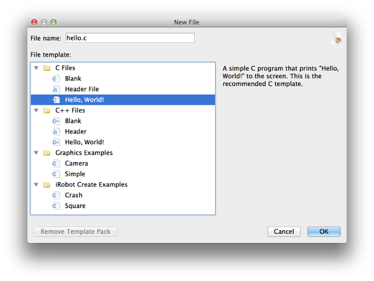

KISS IDE 5.0 Tutorial: Hello World!
KISS IDE is an instructional integrated development environment for the C and C++ programming languages. In this tutorial, you will create and run a Hello World project.
Creating a New Project

First, you need to create a new project.
- Click the "New Project" icon in the center of the KISS IDE window. (Alternatively, you can go to File -> New -> New Project.)
- Enter a project name (e.g. "HelloWorld") and choose a save location (e.g. your "Documents" folder). This information will be important in finding your project at a later time.
- The button labeled "Start with a new file" should be checked. This way, we can create a new file for our project immediately after creating the project.
- Press "OK" to create the new project. The project sidebar will appear on the right hand side of the KISS IDE window, and your new project will be listed there.
Adding a New File
Next, you need to add a file to your project. This file will contain your program.
- After creating the proejct, the "New File" dialog will pop up. This dialog allows you to name your new file and choose a starting template.
- Give the new file a name (e.g.
hello.c). - For the template, select C Files -> Hello, World!. Click "OK."
- Your new file will automatically open in the KISS IDE editor.
Compiling and Running
Now that you've created a project and source file, it's time to compile and run your program!
- Click "Run" on the toolbar at the top of KISS IDE.
- Since this is the first time you've compiled or run this project, a "Target Selection" dialog will appear. You can run your program on a number of targets including your computer, a simulator, and a KIPR Link. For now, run the program locally on your computer by choosing the "My Computer" target and clicking "OK."
- You will see a progress indicator at the bottom of KISS IDE while your program compiles. Once compilation finishes, the progress indicator will disappear and your program will run inside the "cs2" application titled "My Computer." You can leave this application open if you plan on running more programs.

Need Help?
If you have any questions or need assistance, you can call KIPR at 405-579-4609 (M-F, 8:30 a.m. - 5:00 p.m. CST) or email KIPR support.